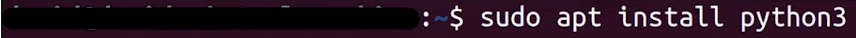

Please note that if you do not want to install Python or already have it, then this lesson isn't required and you can skip to lesson 1 by CLICKING HERE.
1 - To check if you have python installed on a Windows PC, type this in the search bar:
2 - Next we will click on this:
3 - Now we will type "python --version" and if it is installed it will display "Python..." The number after can differ depending on the version you have installed.
1 - To check if you have python installed on a MAC, type this in the search bar and click on "terminal":
2 - Now we will type "python --version" and if it is installed it will display "Python..." The number after can differ depending on the version you have installed.
1 - To check if you have python installed on Linux, type this in the search bar and click on "terminal":
2 - Now we will type "python3 --version" and if it is installed it will display "Python..." The number after can differ depending on the version you have installed.
1 - Firstly, click here to be taken to Python's website where you can download the most recent version.
2 - Next we will tick "add python.exe to PATH" and proceed to install:
3 - Now proceed to continue installing Python and you're done!
1 - Firstly, click here to be taken to Python's website where you can download the most recent version.
2 - Secondly, you need to go through the download and click continue, agree, and allow Python to be installed to continue.
3 - Now Python will be installed!
1 - Firstly, you need to open your terminal:
2 - Secondly, you will type "sudo apt install python3" and it will install Python on your device.

3 - Thirdly, now type "Y" to confirm you want to download Python and hit enter to install.